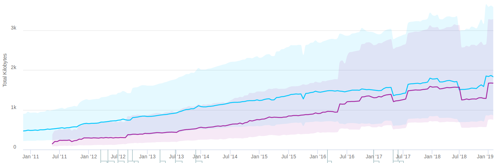
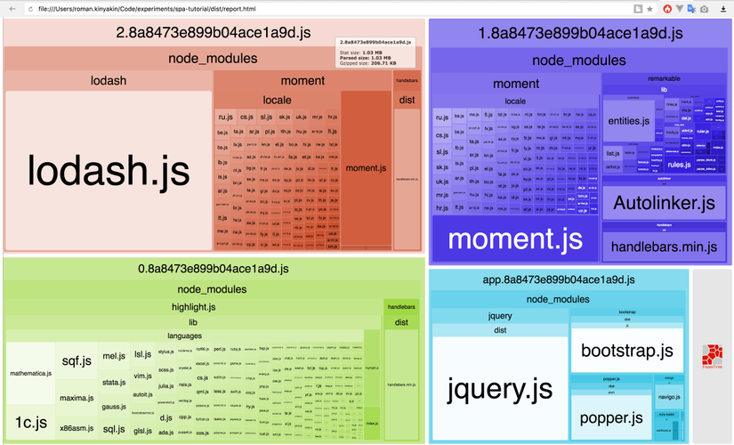
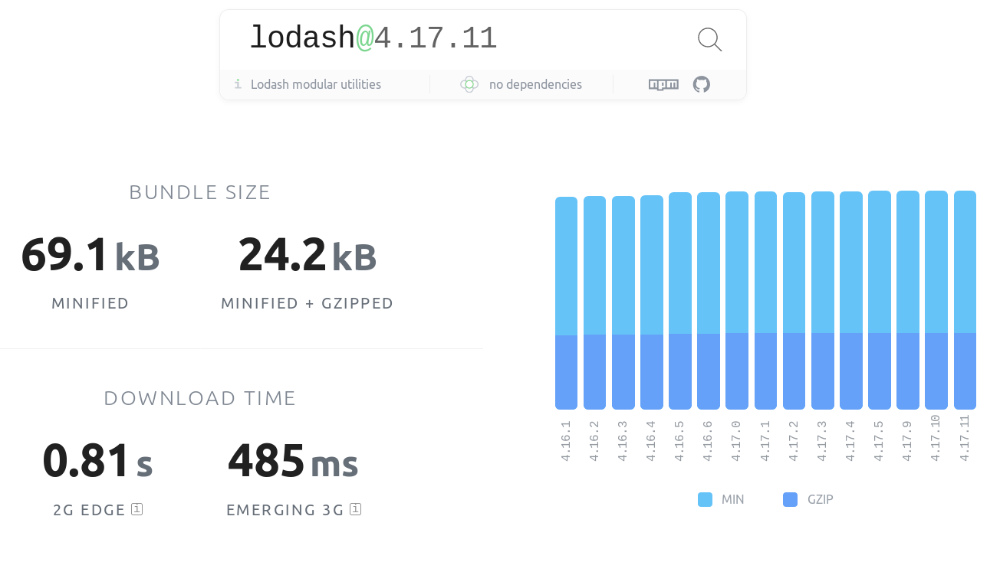
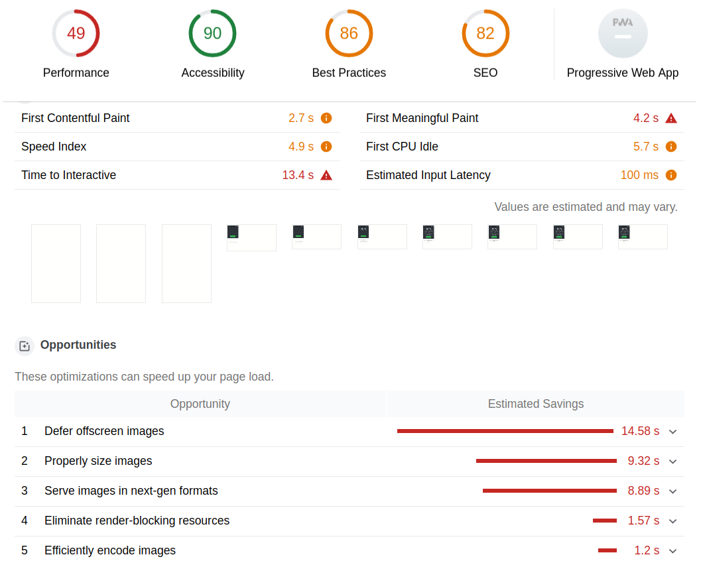
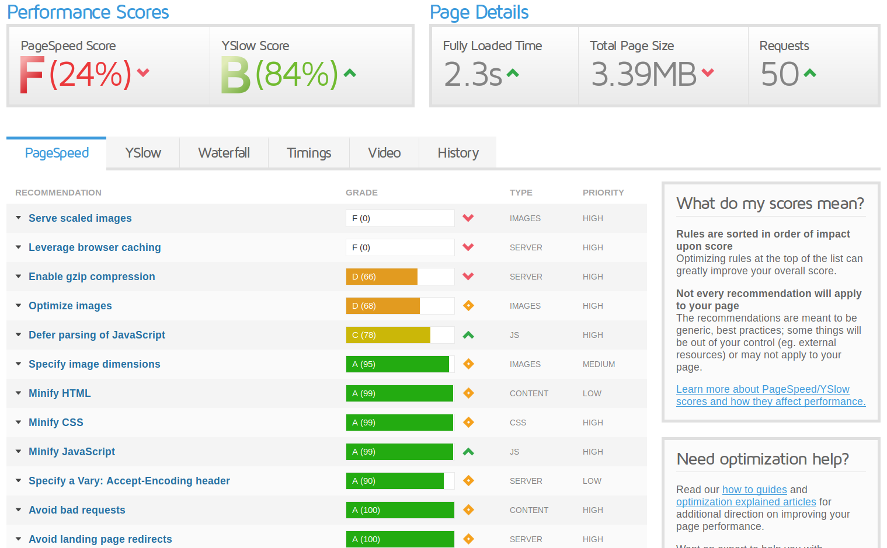

Rendimiento en frontend
luisddm.github.io/web-performance-salamancadevsLuis de Dios
Presentación
Quién soy
- Ingeniero de Teleco
- Últimos cuatro años especializado en frontend
- Ahora dedicado a backend y sistemas en Alea Soluciones
- Coorganizador de FrontFest
- Aficionado a la seguridad y la electrónica
Disclaimer
Motivación
Tenemos un problema con la web
Tamaño, lentitud, complejidad → falta de usabilidad
No se pensó para su uso actual
Análisis
Cómo hemos cambiado
- De simple texto con hipervínculos a grandes aplicaciones interactivas con imágenes, videos, etc.
- De compartir conocimiento a negocio
- De unos pocos "frikis" al público en general
Evolución del peso de la web
Caso de estudio: USA Today
- Edición USA vs edición UE (post RGPD)
- Usando las pestaña Network de las Dev Tools
- Analizar número de peticiones y tamaño tx
- Forzar el throttling
Resultados
- Edición Europa: 34 requests / 540 kB
- Edición USA: ~400 requests / ~10 MB
Otros casos de estudio
| Sitio web | Tx / Total | Req. |
|---|---|---|
| Marca | 5,6 / 13,8 MB | ~600 |
| El País | 6,1 / 17,6 MB | ~450 |
| Tumblr | 3,6 / 6,2 MB | ~75 |
| Medium | 1,4 / 3,3 MB | ~50 |
¿A quién perjudica esto?
Sesgo del desarrollador (y de negocio)
La mayoría de los que nos dedicamos a esto tenemos buen hardware y buenas conexiones, pero el "mundo real" es diferente
Ámbito geográfico
Algunas de las webs que hacemos las utiliza gente que vive en entornos muy diferentes
→ Muchas zonas de Europa aún carecen de conexión de calidad a Internet (El País)
Dispositivos heterogéneos
Existe una enorme variedad de dispositivos para acceder a la web, que cuestan desde pocas decenas a miles de euros
Consumo de datos
¿Cuántas webs podemos ver con un giga de datos?
Bajo "engagement"
Cuando una web tarda demasiados segundos en cargar, la abandonamos
Accesibilidad
El mal rendimiento implica exclusión de algunos segmentos de población
Privacidad
Enorme cantidad de trackers que envían datos personales permanentemente a grandes empresas de internet, incluso sin estar logueados
También impacta en el rendimiento, puede haber scripts bloqueantes
Conceptos
Progressive enhancement
- Implica una forma integral de pensar y desarrollar, afecta a todo el pipeline
- Primero el contenido fundamental, y las mejoras se activan en función de las capacidades del hardware
- Que TODOS los usuarios tengan una experiencia mínima, que no sea todo o nada

First meaningful paint
Que nos "aporte algo" lo más rápidamente posible
Principio de Pareto
También conocido como regla del 80/20
Disponemos de tiempo y presupestos limitados, así que hay que priorizar las optimizaciones
Soluciones
Imágenes
- En cuanto a tamaño, son lo más costoso
- Identificar cuándo usar JPG, PNG, WebP, SVG...
- Balance adecuado entre calidad, tamaño y dimensiones
Cargar sólo imágenes necesarias
Lazy loading → scroll vertical o sliders
Usar diferentes tamaños o resoluciones de imágenes para diferentes media queries
CSS vs HTML
.image {
background-image: url(pic.jpg)
}
@media (min-width: 800px) {
.image {
background-image: url(pic-2x.jpg)
}
}


Manipulación de imágenes
- ImageOptim, XNConvert, The GIMP, imagemagick, svgo...
- Automatizar con Gulp, Grunt, Webpack o simplemente scripts
- Eliminar metadatos
- Guardar con entrelazado
Automatización
Ejemplo con Gulp
gulp.task('images', function() {
return gulp.src('pic.jpg')
.pipe(imageResize({ width: 800 }))
.pipe(imagemin({ progressive: true }))
.pipe(gulp.dest('./dist/img'))
.pipe(rename({ suffix: '@2x' }))
.pipe(imageResize({ width: 400 }))
.pipe(imagemin({ progressive: true }))
.pipe(gulp.dest('./dist/img'))
});
Lo mismo con los vídeos
- Elegir el formato adecuado (WebM, MP4, OGG...) pero cuidado con la compatibilidad
- ¡No GIFs animados! Usar vídeo en su lugar
- ¡No autoplay! Que decida el usuario
- Cuidado con incrustar vídeos de YouTube
Conversión de vídeos
Ejemplo: de GIF a MP4
$ ffmpeg -i anim.gif -b:v 0 -crf 40 -vf scale=600:-1 video.mp4
Minificar
- Eliminar espacios, intros, reducir nombres de variables, etc. (Ej. UglifyJS)
- El tooling propio de cada framework suele automatizar esto para diferentes entornos
- También se pueden usar CDNs para código de terceros
Source maps
- Es un mapeo del código minificado para poder reconstruirlo en el navegador
- Se enlaza desde el fichero minificado y se carga únicamente cuando accedemos al código con las Dev Tools
//# sourceMappingURL=main.js.map
Concatenar
- Juntar todos los archivos JS/CSS en uno solo de cada para reducir las peticiones HTTP
- Pero a veces nos interesa más dividirlos e irlos cargando según se necesiten al navegar
- Si estamos en un framework podemos usar dynamic imports → Lazy-load router
Dynamic import
Ejemplo: router de Vue.js
export default new Router({
routes: [
{
path: '/',
name: 'home',
component: Home
},
{
path: '/about',
name: 'about',
component: () => import('./views/About.vue')
}
]
})
Eliminar código muerto
- Tree-shaking con los módulos de Javascript (Webpack 4)
- Comprobar con tests unitarios, funcionales y E2E
- Eliminar CSS sin usar
- Comprobar con tests visuales (ej Chromatic)
Tipografías
- Usar formatos más ligeros (woff2), pero sin romper compatiblidad
- Usar
font-display: swappara que el texto sea visible con una fuente de fallback mientras se carga la nuestra - Usar SVGs en lugar de fuentes de iconos
La regla @font-face
@font-face {
font-family: "Open Sans";
src: url("/fonts/OpenSans-Regular.woff2") format("woff2"),
url("/fonts/OpenSans-Regular.ttf") format("ttf");
font-weight: 400;
font-display: swap;
}
Cacheado eficiente
- Usar HTTP ETag para establecer adecuadamente los tiempos de vida
- Un ETag es un checksum para comprobar si un recurso ha cambiado
- Con las cabeceras Cache-Control y Expire podemos establecer el TTL
Compresión
El navegador y el servidor negocian la compresión
- Request
GET /route HTTP/1.1
HOST example.com
Accept-Encoding: gzip, deflate
HTTP/1.1 200 OK
Content-Encoding: gzip
APIs experimentales
Ejemplo, sólo funciona en Chrome
networkInformation = navigator.connection // '4g'
Útil sobre todo en móviles
Otros detalles
- Normalmente colocar scripts al final del
<body>para no bloquear el renderizado HTML y CSS - Evitar redirecciones
- Evitar demasiados nodos HTML
- Marcar scripts no críticos con defer
HTTP/2
- Ha de estar soportado tanto por el servidor como por el navegador
- Modifica algunas técnicas vistas previamente
Herramientas de análisis
import-cost
Extensión para VSCode que muestra el tamaño al lado de cada import o require
const {uniqueId} = require('lodash') // 70KB
const uniqueId = require('lodash/uniqueId') // 2KB
Webpack Bundle Analyser
BundlePhobia
Lighthouse
GTmetrix
Enlaces
Conclusiones
Ideas
Elaborar un presupuesto realista de assets y cumplirlo
La petición más rapida es la que no se hace
El byte "menos pesado" es el que no se transmite
¡Minimizar el resto!
Establecer prioridades y buscar la simplicidad